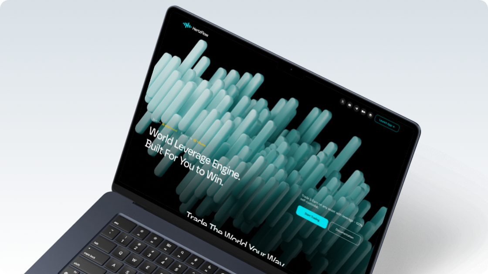

Designing motion and interaction to express the Hertzflow brand and simplify complex Web3 concepts.

For Hertzflow—positioned as a global leverage engine optimizing liquidity and capital efficiency—the website needed to express both financial precision and the dynamic flow of assets. Motion design served as cognitive scaffolding, translating complex smart-contract mechanisms into intuitive visual flows. Purposeful motion also improves information retention and reduces perceived wait time, making complex systems easier to understand.
Hertzflow demonstrates strong technical capabilities through leveraged trading, automated yield strategies, and cross-chain liquidity routing on the BNB Chain. However, complex financial protocols often face high cognitive barriers for users. This project explores motion design strategies for the Hertzflow landing page—covering the hero loop, explanatory animations, scroll-driven 2.5D scenes, and logo micro-interactions—to create a high-performance motion system that balances visual aesthetics with a sense of financial trust.
Hero Loop Animation: Visualizing Liquidity Flow
The Hero section is the user’s first entry point into the Hertzflow ecosystem, and its visual impact strongly influences the bounce rate. In recent design trends, immersive first impressions are often created through guided animation or looping motion to establish brand tone. For a platform focused on cross-protocol liquidity routing, the hero loop is not merely decorative—it acts as a visual metaphor for capital efficiency and asset flow.
Section Motion: Explaining the Product Through Interaction
The second section introduces Hertzflow’s core capabilities through a series of modular panels. Motion is used to progressively reveal product value—such as cross-asset trading, real-world price anchoring, high-leverage strategies, and a tailored trading interface. Subtle animations guide attention across the grid, allowing users to quickly scan each capability while maintaining visual rhythm. Instead of overwhelming users with complex DeFi mechanics, the motion system breaks information into digestible moments, helping users understand the platform’s core advantages through interaction rather than static explanation.
Scroll-driven 2.5D Animation: Spatializing Liquidity Flow
The third section uses a scroll-driven 2.5D animation to visualize Hertzflow’s HzLP liquidity composability. As users scroll, layered depth reveals how funds move from personal wallets into vaults, and then distribute across different markets and liquidity pools. This spatialized presentation helps users form a mental model of the underlying financial topology, turning abstract protocol mechanics into an intuitive visual narrative while reinforcing trust through perceived transparency.
Logo Animation: A Moment of Brand Feedback
The logo animation functions not just as an opening element but as a subtle brand touchpoint at the end of the experience. Placed at the bottom of the landing page or within the navigation, it acts as a small visual reward after users complete their browsing journey. Through a geometric expansion and a subtle wave-based oscillation inspired by Hertz frequency, the motion reflects the brand’s themes of precision and efficiency, reinforcing Hertzflow’s identity as a “leverage engine.”
Through a coordinated motion system across the landing page, Hertzflow’s complex financial mechanisms are translated into intuitive visual narratives. From the immersive hero loop, to explanatory section animations, spatial 2.5D liquidity flows, and subtle logo micro-interactions, motion design guides attention, clarifies product value, and strengthens brand identity. The result is a landing experience that not only communicates technical depth but also builds user confidence by making sophisticated DeFi concepts visually understandable.